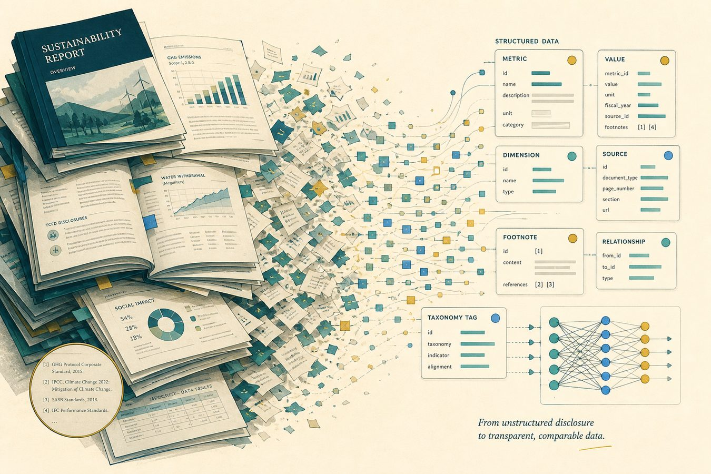
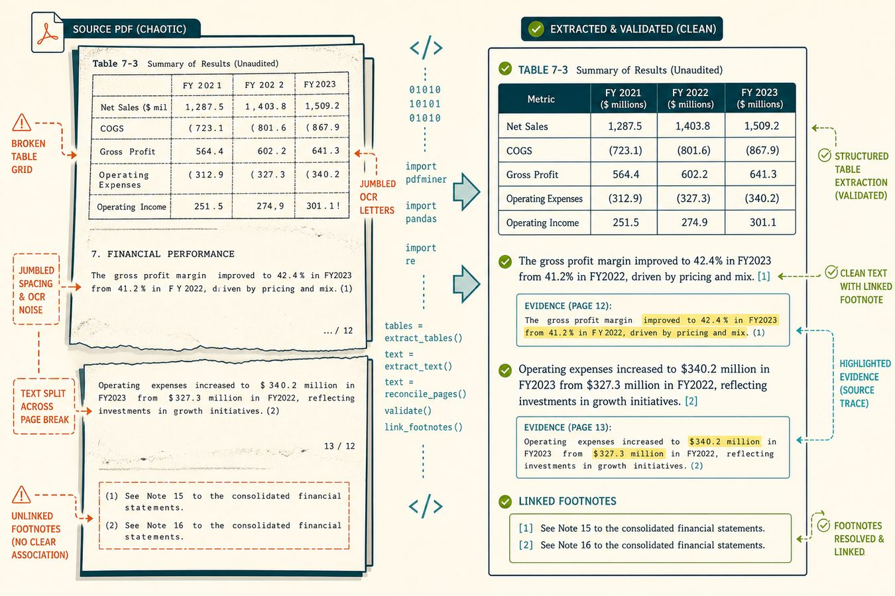
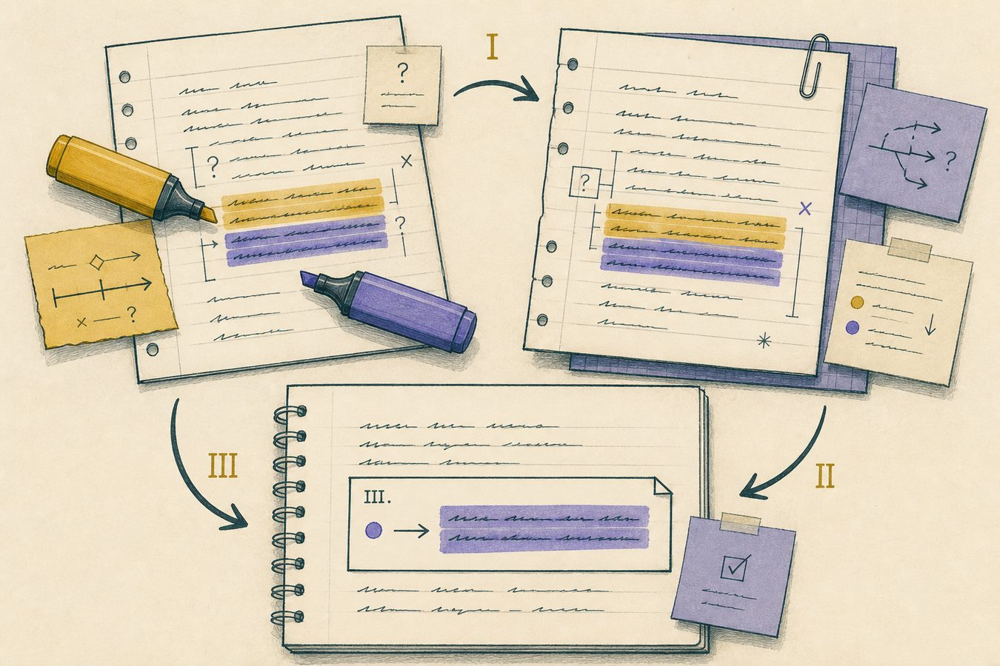

Building Reliable NLP Pipelines for ESG Research

Introduction
If you take one thing from this report, I hope it is this: building an AI system is much more than choosing a model. During my work term as an Undergraduate Research Assistant Co-op at the University of Guelph, I worked at the intersection of Python software development, natural language processing, and machine learning. My primary project was extracting and structuring information from corporate sustainability reports, then using that data to evaluate NLP and large language model systems.
Sustainability reports are written for people, not machines. Useful details can be spread across hundreds of pages, tables, footnotes, and inconsistent file formats. My work focused on making that mess reliable, by building a pipeline that could turn those documents into structured, validated datasets for reproducible AI research.
About the Employer
The University of Guelph applies computing and data-driven methods to scientific and social problems. I joined a research project examining how generative AI and NLP can be used on sustainability and ESG reporting. That mix pulled together areas I had mostly seen separately in coursework: Python, data processing, machine learning, NLP, and software validation.
Research also added a requirement that programming assignments rarely emphasize. It was not enough for a script to work once on my laptop. The outputs needed to be reproducible and defensible. If another researcher could not explain where a label came from, or could not rerun the process, the result was not finished.
Goals and Learning Outcomes
At the start of the term I wanted stronger practical Python skills and real experience with machine learning and NLP. I was especially interested in how large datasets are built and evaluated, because model quality depends so heavily on the data used to train and benchmark it.
My main goals were to:
Python as an engineering tool
Move past assignment-sized scripts into pipelines that extract, validate, and summarize real documents.
Unstructured document processing
Learn how PDFs, OCR, tables, and page breaks fail, then write checks instead of assuming extraction is correct.
Reproducible data pipelines
Design workflows that can be rerun, inspected, and explained rather than run once and discarded.
Research software practice
See how research code differs from coursework: evidence, methodology, and validation matter as much as a working demo.
LLM evaluation datasets
Help construct structured concepts, annotation rules, and evidence-linked examples that a benchmark can actually score.
Hands-on model training
I applied classification and NLP methods, but spent more of the term on data quality than on training new models. That was not a failure of the term so much as a correction of what I thought ML work looked like.
I did not get as far into model training as I originally pictured, because extraction failures, ambiguous labels, and annotation rules kept turning into the real bottleneck. Looking back, that was the more useful lesson. The skills I did build, like debugging messy inputs, defining concepts, and validating outputs, are the ones I expect to reuse in the next work term, whether the project is research or a production data system.
Job Description
My main responsibility was developing and evaluating data-processing workflows for corporate sustainability reports. Those reports contain useful information about environmental, social, and governance practices, but extracting that information reliably is a technical problem, not a formality.
Early on I built Python pipelines for PDF text extraction, OCR, table reconstruction, validation, and evidence linking. I treated extracted text as untrusted until checks said otherwise. Skills I already had from class, including Python, some ML, and basic data handling, were the starting point. The job-specific skills, especially document failure cases and research validation, I learned on the term.
From documents to structured data
The overall workflow looked like this:
- Sustainability reports
- Document extraction
- Candidate evidence
- Validation
- Annotation
- Structured dataset
- NLP / LLM evaluation

I wrote Python scripts to automate extraction and analysis, generated dataset statistics and disclosure distributions, and helped set up validation procedures. The interesting part was the failure cases that never show up in a clean classroom dataset: a table reconstructed with the wrong columns, a sentence split across pages, or text attached to the wrong evidence span. Debugging those meant reading both the code and the original document.
Data processing is not simply a preliminary step before machine learning. It is a significant engineering problem in its own right.
Machine learning and NLP
I also applied machine learning and NLP methods to classify corporate ESG disclosures according to SASB reporting standards. Unlike a toy dataset, the categories came from a real domain framework, so "correct" depended on the standard, not on whatever labels happened to be convenient.
Another major piece was a domain-specific ESG ontology and evaluation protocol. I worked with reporting frameworks including IFRS S2, TCFD, GRI, and SASB, mapping requirements into structured disclosure concepts.
That work connected directly to evaluating evidence-grounded LLM reasoning. Instead of scoring whether an answer merely sounded reasonable, the benchmark could ask whether the model's conclusions were supported by the right evidence from the source documents.
Dataset quality and annotation

A large part of the term went into making the annotated dataset more consistent. Across several versions of the annotation handbook I flagged ambiguous cases, helped resolve disagreements, and refined the methodology. I had assumed annotation was mostly data entry. I learned that a useful ML dataset depends on careful definitions and explicit rules for exceptions.
That changed how I think about evaluation. Model scores are downstream of how the problem is defined, how the dataset is built, and what counts as a correct answer. Designing the ontology made that hard to ignore.
What I Learned
The main technical lesson was that an AI system has a long engineering layer around the model. Before anything can be evaluated, data has to be extracted, cleaned, structured, validated, and represented in a way that makes evaluation meaningful. Working with real sustainability reports showed me the messy edge cases that smaller classroom datasets hide.
I also got much more comfortable using Python as an engineering tool: automating analysis, building pipelines, validating intermediate outputs, generating statistics, and supporting workflows another researcher could rerun. In a research setting, a script that works once is not the finish line. Failures should be visible, and the resulting dataset should be explainable.
The incomplete goal around model training is part of that lesson rather than a footnote. I still want more experience training and iterating on models, but I no longer think of that as the whole job. Next term I can walk into an ML or backend project already expecting the data path to be where a lot of the work lives.
Connection to Future Goals
This term strengthened my interest in software engineering roles involving data-intensive systems, machine learning infrastructure, and backend development. Before the co-op, I mostly associated ML experience with implementing models. The project showed me the surrounding layer: document processing, pipelines, validation, storage, evaluation infrastructure, and automation.
Those Python pipelines also transfer to backend and systems work. I am more used to thinking about data moving through stages, handling failures, checking intermediate outputs, and designing processes that can be repeated. That is the mindset I want to bring into the next work term.
Conclusion
I started the term hoping to improve my Python and machine learning skills. I finished with a broader picture of what reliable AI systems actually require. The central challenge was transforming messy, human-oriented sustainability reports into structured evidence for machine learning and LLM evaluation. Along the way I gained experience in Python automation, NLP, document processing, dataset construction, ontology design, annotation methodology, and validation.
If someone described this website after reading it, I would want them to say: Joshua spent a co-op term showing that reliable AI depends on reliable engineering and reliable data, and that building the pipeline around the model can be as important as the model itself.
Acknowledgments
Thank you to my research supervisor and the members of the research team for their guidance throughout the work term. Their feedback on methodology, annotation, and technical work gave me room to grow both as a software developer and in applied AI research.